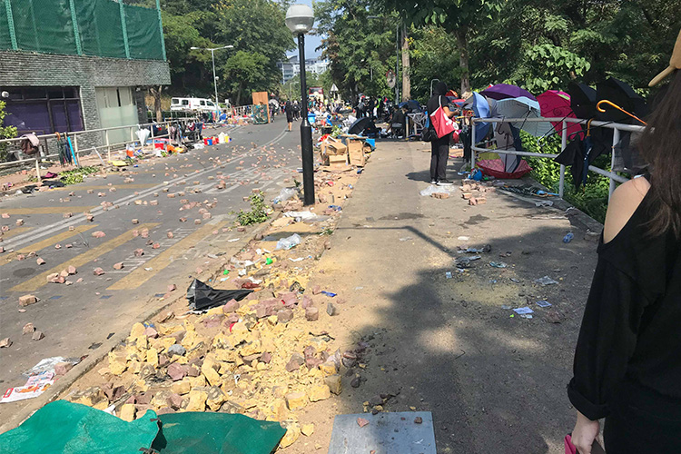
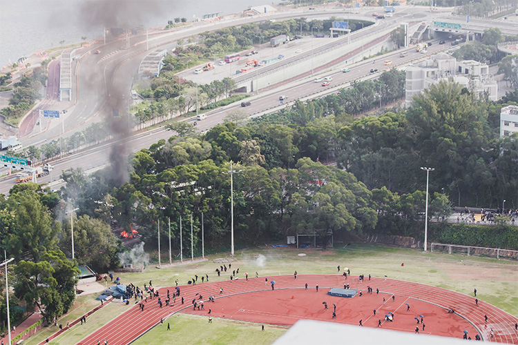
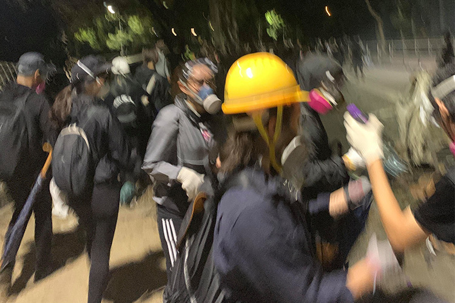

【專欄】離開動盪現場後：來自港中大台生的告白
2019-11-22 吳冠伶
#台生
#香港中文大學
#反送中
【記者吳冠伶綜合報導】自今年六月起，反送中運動的警民衝突持續擴大，局勢至今越演越烈。11日，警方與示威者的對峙蔓延到香港中文大學（以下簡稱中大），校園成為抗爭第一線後，校方也於13日宣布學期提前結束。多數台生認為待在校內不再安全，在陸委會與台灣學生會的協助下匆匆搭機返台。

中大最嚴重的衝突發生在12日晚間，隔天一早，台生以手機記錄下前線的一片狼藉。 圖／Claire提供
「每個人的行李都很簡便，因為我們都以為我們會回去（學校），沒想到要回台灣。」在中大攻讀會計的Lucy，憶起離開香港的過程，仍感到倉促地不可思議。13日下午，Lucy和朋友們本要護送其他台生搭車去機場，卻在途中接獲學期停止的通知。於是一行人在截止前十分鐘迅速決定登記，跟著政府安排的班機回國。
離開之匆忙，幾乎連整理行李的時間都沒有。有人只背了一個後背包、帶回一件外套，宿舍裡甚至還堆著尚未清洗的衣物及餐碗。
同樣經歷這逃難般場景的，還有Mia。返台當天，校區周遭交通皆被癱瘓，她在社群平台上得知地處偏僻的崇基門還能勉強通行。她形容，那天鑽過崇基門的一堆路障後，在公路上步行了不知道多久，才終於搭上接駁巴士。路途雖然艱辛，但一想到可以回到安全的家鄉，心裡還是輕鬆許多。
在衝突最激烈的12日，Mia就住在夏鼎基體育場附近。原本只打算出國完成學業的她從沒想過，自己有一天會成為香港歷史的見證者。「我的宿舍看得到煙、火花，聽得到『碰、碰、碰』的聲音，那個聲音頻繁地像在放煙火，但其實都是催淚彈。」她指出，真正的對峙點其實是二號橋，警方卻對著體育場大量投擲催淚彈。「他們（港警）好像挾帶著怨氣，對學生殺雞儆猴。」對於警方在大學內進行暴力鎮壓，Mia表示無法理解。

站上夏鼎基體育場旁的大樓，便能清楚感受到雙方交鋒時的緊張氛圍。 圖／instagram@the3dsandwich提供
對緊急回台的學生而言，留在香港的，除了來不及帶走的行李，還有對當地友人的掛念。一名台生Helen說：「有時候覺得愧疚感很重，沒有再多幫到他們什麼，然後就回來了。」不過令她感動的是，港人非常感激來自台灣的支持，並不會將之視為理所當然。「他們（香港人）會跟你說趕快回來台灣，不要再繼續待在香港了，可是你越聽到這種話，會越覺得很愧疚。」
不少台生十分同情香港同學的處境，尤其在衝突進入中大校區後，更有人協助支援搬運物資等工作。來自工商管理學院的Kelvin指出，曾親眼在校內看到警察衝向一名什麼也沒做的學生，二話不說就把他壓在牆上。他說：「那是我第一次被無力感充滿，畢竟我什麼忙都幫不上。」後來，Kelvin發現自己再也無法置身事外，便跟著學長姐以人鏈的方式將手套、水、燃燒瓶、防毒面罩、竹子、保鮮膜等物資傳下山。前前後後大概傳了四、五個小時，手都被刮傷，但也因此學到不少廣東話。回憶起那天的經驗，他說：「第一次真的跟香港人站在同一線，覺得自己有幫上忙。」

不少人主動投入物資運送行列，其中也包含台籍學生。 圖／Johnny提供
日前，包括台大、交大等多所大學皆宣布願意盡力協助香港學生返台就學。然而在訪問多位台生後，僅有少數表示可能會到大學旁聽課程，大部分同學仍傾向等待局勢穩定，再回去完成學業。就讀二年級的Mia表示，自己經過了一年才剛適應當地生活，也很喜歡香港中文大學的環境，對於中途離開其實相當不捨，希望能盡快回到香港復學。
另一方面，經歷動盪後回到台灣，以前從不覺得選舉很重要的她，也開始思考要不要為了明年1月11日的總統大選，改訂開學後一周的機票（註：香港第二學期於2020年1月6日開始）。
「香港人如果有這個權利，他們應該會很珍惜吧。」Mia語重心長地說。
廢人廢話

吳冠伶
千禧年生於打狗，貓空寄居中，政大新聞系三年級。喜歡打狗大於貓空，喜歡貓貓狗狗，但貓貓大於狗狗。
廢廢相報

記者｜吳冠伶 徐嘉璟 陳庭寬
指導｜李法賢
copyright©2020 廢報